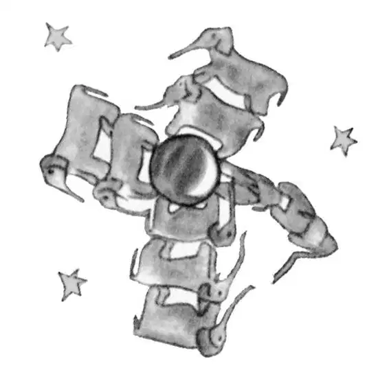
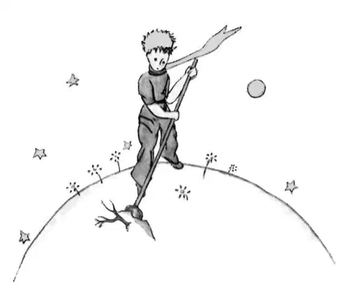
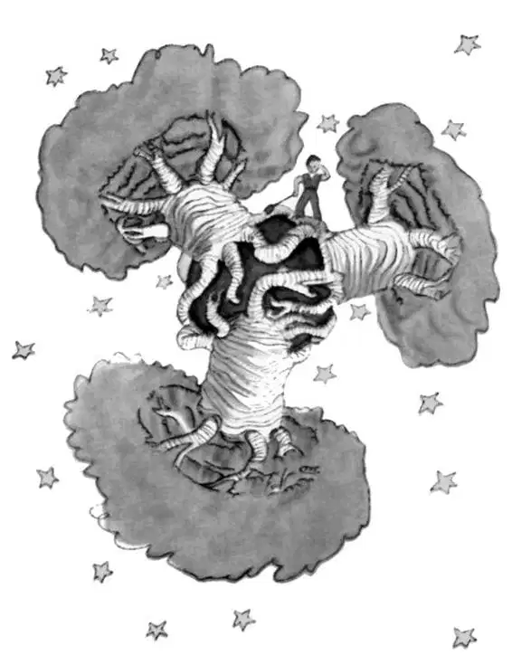

CHAPTER 5
第五章
—we are warned as to the dangers of the baobabs
——警告我们要小心猴面包树
As each day passed I would learn, in our talk, something about the little prince's planet, his departure from it, his journey. The information would come very slowly, as it might chance to fall from his thoughts. It was in this way that I heard, on the third day, about the catastrophe of the baobabs.
随着日子一天天过去，我逐渐从我们的谈话中了解到更多关于小王子星球的事，他怎么离开那里以及他的旅程。这些信息我都是慢慢得到的，因为它们都是偶然从小王子的想法中透露出来的。就是以这种方式，第三天的时候，我听说了有关猴面包树的灾难。
This time, once more, I had the sheep to thank for it. For the little prince asked me abruptly—as if seized by a grave doubt—"It is true, isn't it, that sheep eat little bushes?"
这一次又是羊的功劳。因为小王子一脸的怀疑，神情严肃，突然问我道：“羊吃小灌木，这是真的，对不对？”
"Yes, that is true."
“是啊，是真的。”
"Ah! I am glad"
“啊！我很高兴！”
I did not understand why it was so important that sheep should eat little bushes. But the little prince added:
我不明白，为什么羊吃小灌木这么重要。可小王子又接着说道：
"Then it follows that they also eat baobabs?"
“那么由此推断，他们也要吃猴面包树喽？”
I pointed out to the little prince that baobabs were not little bushes, but, on the contrary, trees as big as castles; and that even if he took a whole herd of elephants away with him, the herd would not eat up one single baobab.
我向小王子指出，猴面包树并不是小灌木，相反，是和城堡一样高的大树；我告诉他，即使他带上一整群大象，他们也吃不完一棵猴面包树的。
The idea of the herd of elephants made the little prince laugh.
一整群大象的想法让小王子笑了起来。
"We would have to put them one on top of the other," he said.
“我们得把他们一个个摞起来才行。”他说道。

But he made a wise comment:
不过他之后的看法倒是很有见地。
"Before they grow so big, the baobabs start out by being little."
“他们长大之前，也是从小树开始长起的呀。”
"That is strictly correct," I said. "But why do you want the sheep to eat the little baobabs?"
“完全正确。”我回答说，“可是你为什么想让羊吃小猴面包树呢？”
He answered me at once, "Oh, come, come!", as if he were speaking of something that was self-evident. And I was obliged to make a great mental effort to solve this problem, without any assistance.
他立即回答道：“噢，那还用说！”似乎他说的都是些不言而喻的事情。于是我不得不费了极大的心思，靠自己来解决这个问题。

Indeed, as I learned, there were on the planet where the little prince lived—as on all planets—good plants and bad plants. In consequence, there were good seeds from good plants, and bad seeds from bad plants. But seeds are invisible. They sleep deep in the heart of the earth's darkness, until some one among them is seized with the desire to awaken. Then this little seed will stretch itself and begin—timidly at first—to push a charming little sprig inoffensively upward toward the sun. If it is only a sprout of radish or the sprig of a rose-bush, one would let it grow wherever it might wish. But when it is a bad plant, one must destroy it as soon as possible, the very first instant that one recognizes it.
其实，就我所知，小王子的星球上（所有的星球都是这样）有好的植物，也有坏的植物。结果，好的植物留下了好种子，而坏的植物则结下了恶种。可这些种子是看不见的。它们在大地的怀抱里沉睡，周围一片黑暗，直到其中一颗种子挣扎着醒来。之后，这颗小小的种子使劲地向上钻，开始还有些胆怯，后来则奋力长出一片可爱的小嫩芽，乖乖地向着太阳看齐。如果只是一颗萝卜芽或是要长成玫瑰丛的小嫩苗，人们就会让它自由地成长。但若是一株不好的植物，人们就必须在第一眼认出它时尽快将它铲除。
Now there were some terrible seeds on the planet that was the home of the little prince; and these were the seeds of the baobab. The soil of that planet was infested with them. A baobab is something you will never, never be able to get rid of if you attend to it too late. It spreads over the entire planet. It bores clear through it with its roots. And if the planet is too small, and the baobabs are too many, they split it in pieces...
现在，小王子家园的那个星球上就有一些可怕的种子，就是猴面包树的种子。这些种子在那星球的土壤里肆意滋生。如果你没有及早除掉猴面包树的话，那么就永远无法摆脱它了。它可以长满整个星球。它的根可以穿透星球。如果星球太小，而猴面包树太多，那么它们会把星球扯得粉碎……
"It is a question of discipline," the little prince said to me later on. "When you've finished your own toilet in the morning, then it is time to attend to the toilet of your planet, just so, with the greatest care. You must see to it that you pull up regularly all the baobabs, at the very first moment when they can be distinguished from the rosebushes which they resemble so closely in their earliest youth. It is very tedious work," the little prince added, "but very easy."
“这是纪律问题。”小王子后来跟我说。“早上你梳洗完毕后，就该给你的星球梳洗了，就这样，精心地照看它。你必须确保按时拔掉所有的猴面包树，它们小的时候和玫瑰苗长得极为相似，所以一经辨认就得立即除掉。这是非常乏味的工作，”小王子补充说，“可也是非常容易的。”
And one day he said to me: "You ought to make a beautiful drawing, so that the children where you live can see exactly how all this is. That would be very useful to them if they were to travel some day. Sometimes," he added, "there is no harm in putting off a piece of work until another day. But when it is a matter of baobabs, that always means a catastrophe. I knew a planet that was inhabited by a lazy man. He neglected three little bushes..."
一天，他告诉我说：“你应该画一幅漂亮的图画，这样你住的地方的那些孩子就会很清楚，所有的一切是怎么一回事。如果有一天他们想要旅行，那对他们会大有用处的。有时，”他又接着说道，“将一些工作推迟几天，改天再做也没有坏处。可如果是猴面包树的事，那一定意味着灾难。我知道一个星球，那里住着一个懒人。他漏掉了三棵小树苗……”

So, as the little prince described it to me, I have made a drawing of that planet. I do not much like to take the tone of a moralist. But the danger of the baobabs is so little understood, and such considerable risks would be run by anyone who might get lost on an asteroid, that for once I am breaking through my reserve. "Children," I say plainly, "watch out for the baobabs!"
于是，边听小王子向我描述，我边把那个星球画了出来。我不大愿意以一个道德家的口吻说话。但是猴面包树的危险却很少有人能明白，而且任何一个可能迷失在小行星上的人都会冒很大的风险，因而，只有这一次我打破了我一贯有所保留的作风。我清清楚楚地说：“孩子们，要小心猴面包树啊！”
My friends, like myself, have been skirting this danger for a long time, without ever knowing it; and so it is for them that I have worked so hard over this drawing. The lesson which I pass on by this means is worth all the trouble it has cost me.
我的朋友们和我一样，长期以来处于这种危险的边缘，却对它一无所知。因此，正是为了他们，我才努力作了这幅画。我用这种方式传递给他们这一经验教训，虽然费劲，但很值得。
Perhaps you will ask me, "Why are there no other drawing in this book as magnificent and impressive as this drawing of the baobabs?"
或许你会这样问我：“为什么这本书里找不到其他图画像这幅猴面包树的画作一样壮观，一样让人印象深刻呢？”
The reply is simple. I have tried. But with the others I have not been successful. When I made the drawing of the baobabs I was carried beyond myself by the inspiring force of urgent necessity.
我的回答很简单。我试过。但是画其他画我却没有成功过。当我画猴面包树的时候，一种迫切的需求给了我灵感，让我超越了自我。